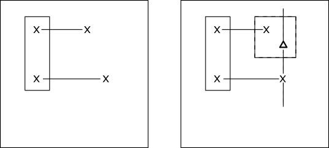
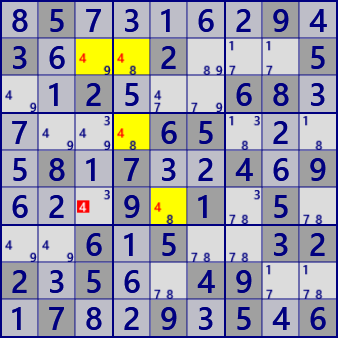
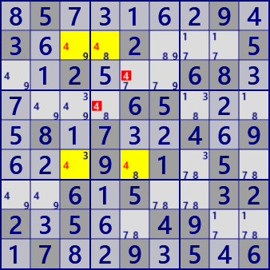
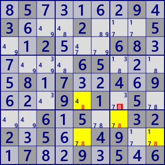
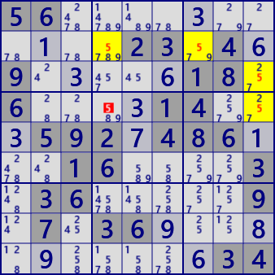
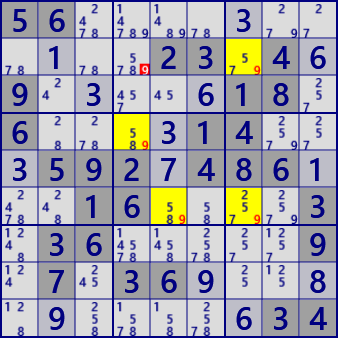
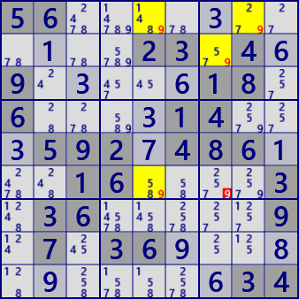

Skyscraper
For the description of Skyscraper, use cell-to-cell link and
ConnectedCells.
Skyscraper is a pattern type solution like LockedSet, Fish and consists of two strong links.
For two strong links of digit X, only one of the four end cells belongs to the same House (left figure).
At this time, X is excluded from the cell related to the remaining end cell(Δ cell in the right figure).

The analysis algorithm of Skyscraper is also the procedure of this figure.
- Set digit X
- Selection of two strong links
- Check that only one pair of link end points belong to the same House
- Search excluded candidate cells
Skyscraper is a relatively easy analysis method and it will be easy to find even if when humans play. Skyscraper is a relatively easy analysis method and it will be easy to find even when humans play. There may be several skyscrapers found on the same scene. The following figure is three skyscraper of each same scene.
     
.5.....9.3...2...5..2...68.....65....8.7..4.9...9.1.5...6.5..322.5..49...7..9.5.6(Upper）
56...........23.4.9.....18.6....14...592.486...16....3.36.....9.7.36...........34(Lower)）
Skyscraper C# program
Supplement for two link selections.
Selection of two pairs of links is Permutation.
The link is generated and treated to have a direction.
If without direction, the comparison of both ends of the link becomes complicated.
The method adopted here is simpler to process.
public partial class NXGCellLinkGen: AnalyzerBaseV2{
private int GStageMemo;
private List<UCell> BVCellLst;
public NXGCellLinkGen( GNPX_AnalyzerMan pAnMan ): base(pAnMan){ }
private void Prepare(){
if(pAnMan.GStage!=GStageMemo) {
GStageMemo=pAnMan.GStage;
CeLKMan.Initialize();
BVCellLst=null;
}
}
public bool Skyscraper(){ //Using Strong
Prepare();
CeLKMan.PrepareCellLink(1); //Generate strongLink
for( int no=0; no<9; no++ ){
int noB=(1<<no);
var SSLst = CeLKMan.IEGetNoType(no,1).ToList();
if( SSLst.Count<=2 ) continue;
var prm=new Permutation(SSLst.Count,2);
int nxtX=99;
while( prm.Successor(nxtX) ){
UCellLink UCLa=SSLst[prm.Pnum[0]], UCLb=SSLst[prm.Pnum[1]];
nxtX=0;
if( UCLa.ID<UCLb.ID ) continue; //
nxtX=1;
if( (UCLa.B81|UCLb.B81).Count!=4 ) continue;
//All cells are different
Bit81 ConA1=ConnectedCells[UCLa.rc1], ConA2=ConnectedCells[UCLa.rc2];
if( !ConA1.IsHit(UCLb.rc1) || ConA1.IsHit(UCLb.rc2) ) continue;
if( ConA2.IsHit(UCLb.rc1) || ConA2.IsHit(UCLb.rc2) ) continue;
//(UCLa.rc1)(UCLb.rc1):belongs to the same house only
Bit81 candHit = ConA2 & ConnectedCells[UCLb.rc2];
candHit = candHit - (ConA1 | ConnectedCells[UCLb.rc1]);
bool SSfond=false;
foreach( UCell P in candHit.IEGetUCeNoB(pBDL,noB) ){
P.CancelB = P.FreeB;
SSfond=true;
}
if(SSfond){
.
. (Solution report code)
.
return true;
}
}
}
return false;
}
}